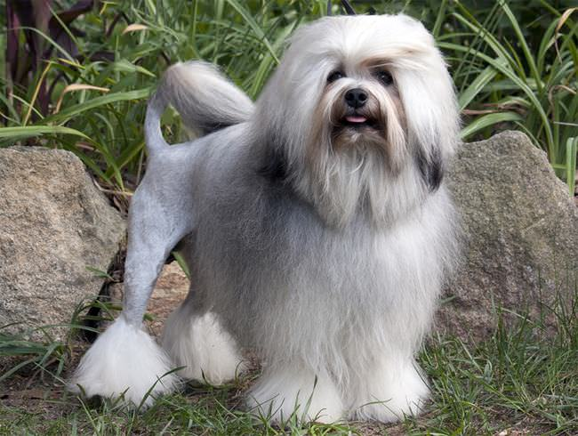
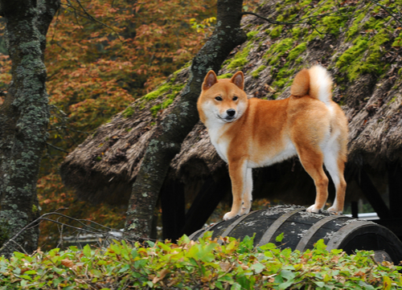
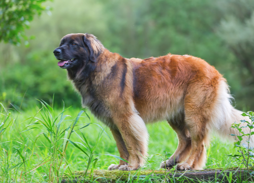
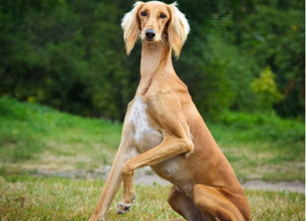

| Image |
Breed type |
Description |
|  |
Löwchen |
Löwchen which translated from German is Little Lions, are rare dog breeds dating from 1442.These dogs are toy dog breeds that are developed to be companion dogs. They were once owned by the wealthy elite of Germany and France before and they can be even seen in historical paintings. Löwchens can do well in dog competitions such as their obedience and agility. |
|  |
Shiba Inu |
The Shiba is an ancient Japanese foxlike dog breed which was developed in 300 B.C. to hunt large game in rough mountains. Today, Shiba's are the top companion dogs in Japan. They can adapt to living in either cities or rural areas. Its Good natured and it has a lot of energy. |
|  |
Leonberger |
Leonberger are massive hounds that originated from Leonberg in Germany where its name came from too. An adult male can weigh up to 170 pounds. These dogs are Affectionate and easy-going can can get along with children. |
 |
Borzoi |
Also called Russian Wolfhounds, these long snouted dog where originally bred to hunt wolves in events every bit as social and structured as the British fox hunts. The name "Borzoi" comes from the Russian word "borzyi" which when translated means "swift". They can reach speeds of 35 to 40 miles per hour and are usually calm and affectionate with their people. |
 |
Tibetan Mastiff |
This large dog can weigh up 100 to 160 pounds and stand 26 inches high at the shoulder. The dog's heavy and thick coat of fur helped it survive through the harsh temperatures of the winters in central Asia. |
 |
Portuguese Water dog |
Portuguese Water dogs have high energy and where once used to help fisherman acting even as courriers to one ship to another.Today, these dogs can be extremely rare. |
 |
Brussels Griffon |
They originated from Belgium. They were used to hunt small rodents, and now made to be wonderful companions. |
 |
Dandie Dinmont Terrier |
These Terraiers is rare these days with only a few hundred a year. These dogs are intelligent that can adapt to city living or even life in the country. They also make good watch dogs because of their big barks for their size and enjoy playing with children. |
 |
New Guinea Singing Dog |
These Dogs have different pitched howls to produce a symphony when their joined together |
 |
Saluki |
Also sometimes called a Persian Greyhound, is a speedy dog breed that can exceed a Borzoi's speed. They can form strong bonds with their people, But not gentle, the breed does not go well in a house with small animal pets. |